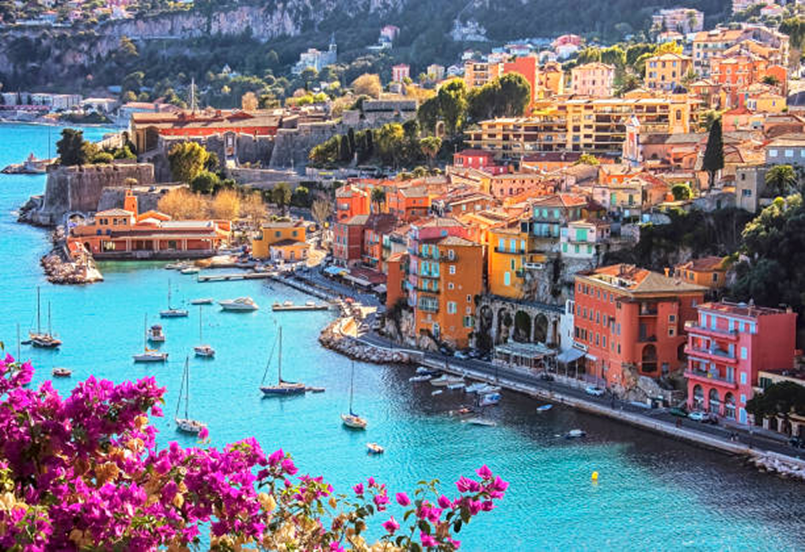
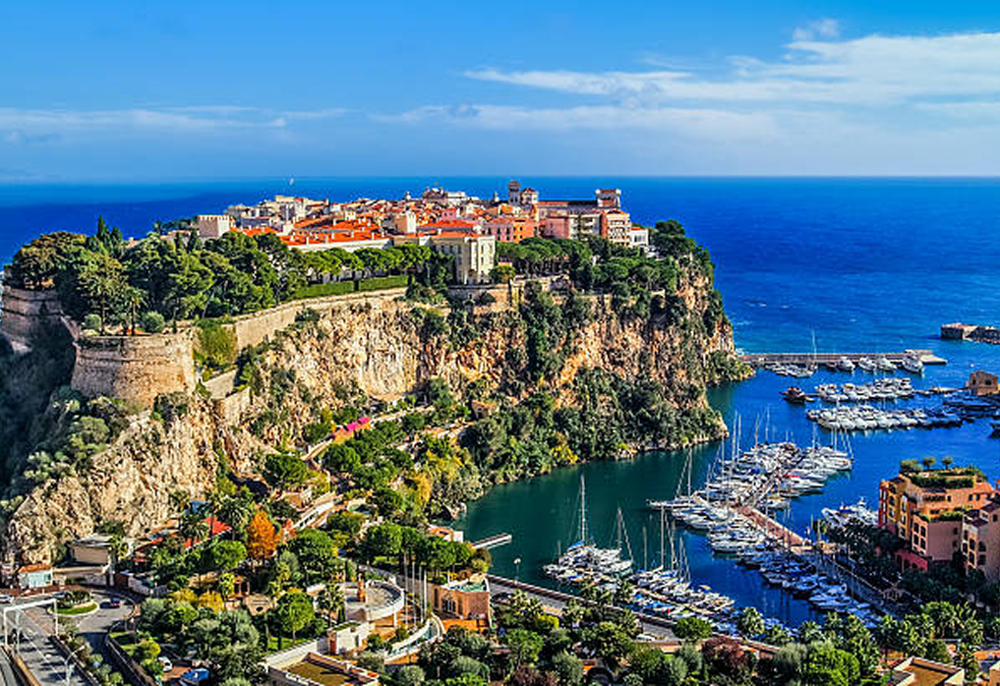
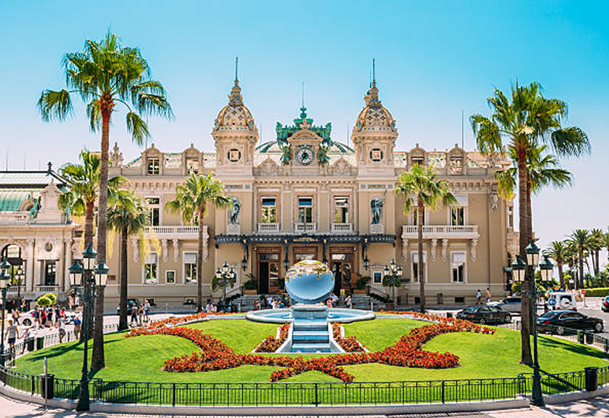

INFORMAÇÕES
Mónaco, oficialmente Principado do Mónaco ou Principado de Mônaco, é uma cidade-estado soberana e, portanto, um microestado, situado ao sul da França. Fazendo costa com o mar Mediterrâneo, o principado, fundado em 1297 pela Casa de Grimaldi — até hoje sua soberana —, fica a menos de 20 km a leste da cidade de Nice e 20 km a oeste da cidade de Ventimiglia. Possui aproximadamente uma área de 2,02 km², sendo o segundo menor Estado do mundo, atrás apenas do Vaticano, com 44 hectares de área, e é o estado com a densidade populacional mais alta do mundo.Tem como forma de governo a monarquia constitucional, em que o monarca é Sua Alteza Sereníssima, o Príncipe Alberto II do Mónaco.
  